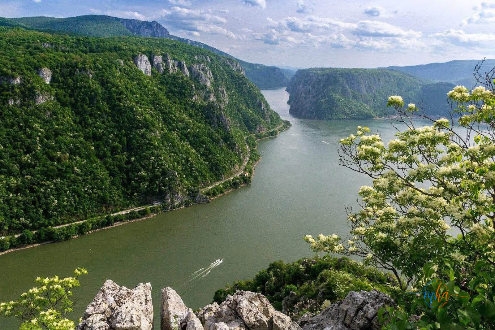
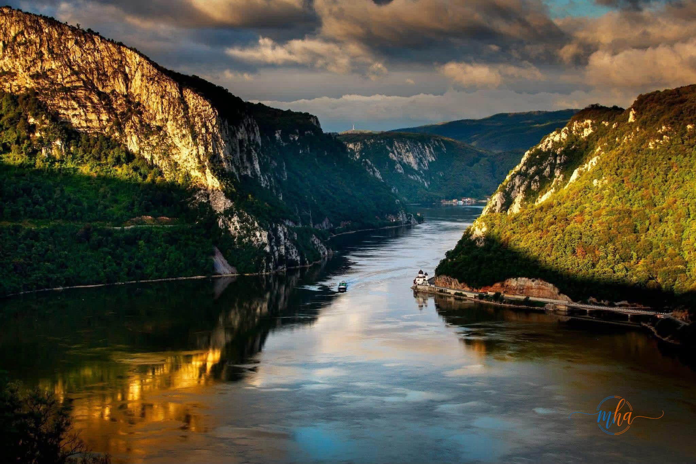
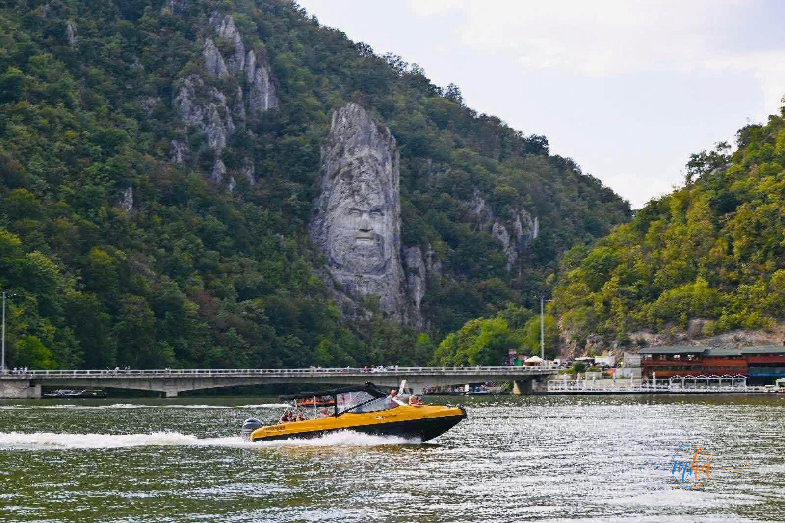

În fiecare an, pe 29 iunie, este sărbătorită Ziua Internațională a Dunării, un moment dedicat unuia dintre cele mai importante fluvii ale Europei și un prilej de a conștientiza rolul esențial pe care acesta îl are în viața comunităților pe care le traversează. Pentru județul Mehedinți, Dunărea nu reprezintă doar o graniță naturală sau o cale navigabilă, ci o parte fundamentală a identității locale, o sursă de dezvoltare economică, un simbol al patrimoniului natural și o atracție turistică de o valoare inestimabilă.
🌊 Dunărea și județul Mehedinți — în cifre și repere
- Al doilea cel mai lung fluviu din Europa — 2.860 km
- Traversează sau delimitează 10 țări europene
- Cazanele Dunării — cel mai spectaculos defileu fluvial din Europa
- Parcul Natural Porțile de Fier — arie protejată de importanță europeană
- Faleza Drobeta-Turnu Severin — punct de atracție turistică pe malul Dunării
- Zeci de mii de turiști români și străini anual
Un peisaj spectaculos — de la Cazanele Dunării la faleza Drobetei
Cu un peisaj spectaculos și o biodiversitate impresionantă, Dunărea oferă județului Mehedinți unele dintre cele mai frumoase locuri din România. De la falezele municipiului Drobeta-Turnu Severin și până la zona Cazanelor Dunării, fluviul impresionează în fiecare anotimp prin frumusețea sa și atrage anual zeci de mii de turiști români și străini, contribuind semnificativ la dezvoltarea turismului local.

Cazanele Dunării — cel mai spectaculos defileu fluvial din Europa, comoară naturală a județului Mehedinți.
Motor al economiei regionale și al turismului mehedințean
Dunărea este și un motor important al economiei regionale. Activitățile portuare, transportul fluvial, pescuitul, turismul și serviciile conexe susțin numeroase locuri de muncă și reprezintă oportunități de dezvoltare pentru comunitățile din județ. În același timp, fluviul joacă un rol esențial în protejarea ecosistemelor naturale, fiind habitat pentru numeroase specii de plante și animale care contribuie la echilibrul biodiversității europene.


Istorie, tradiție și identitate — Dunărea de-a lungul veacurilor
Pentru locuitorii județului Mehedinți, Dunărea înseamnă istorie, tradiție și continuitate. De-a lungul secolelor, fluviul a fost martorul dezvoltării orașelor și satelor de pe malurile sale, a favorizat schimburile comerciale și culturale și a contribuit la formarea identității acestei regiuni. Astăzi, Dunărea continuă să unească oameni și comunități, fiind un simbol al cooperării și al dezvoltării durabile.
„Dunărea va rămâne întotdeauna un reper al dezvoltării, al turismului, al naturii și al identității locale. Este locul unde istoria întâlnește prezentul, unde natura oferă spectacole impresionante și unde fiecare răsărit sau apus reflectat în ape amintește de valoarea extraordinară a acestui colț de Românie."

Dunărea — un simbol al frumuseții naturale și al identității județului Mehedinți.
Un apel la responsabilitate: protejăm Dunărea pentru generațiile viitoare
Ziua Internațională a Dunării reprezintă totodată un apel la responsabilitate. Protejarea apelor, reducerea poluării, conservarea habitatelor naturale și utilizarea responsabilă a resurselor sunt obiective esențiale pentru păstrarea acestui patrimoniu natural. Fiecare dintre noi are responsabilitatea de a contribui la protejarea Dunării, astfel încât generațiile viitoare să se poată bucura de aceeași frumusețe și bogăție naturală.